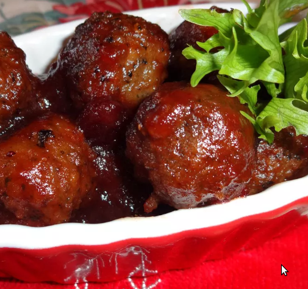

Cape Cod Cocktail Meatballs

Delicious Cape Cod Cocktail Meatballs
Description
These cocktail meatballs are perfect for a Christmas, New Year's Eve, or any party that you want to impress. They are the first appetizer to go, and everyone wants the recipe. The recipe originated in Cape Cod (cranberry country). Bon appetit!
Ingreedient
- 2 pounds ground beef
- 1 cub bread crumbs
- 1/4 cup chopped fresh parsley
- 2 eggs
- 2 tablespoons grated onion
- 2 tablespoons soy sauce
- 1/4 teaspoons garlic powder
- 16 ounces can jellied cranberry sauce
- 1.5 cups of ketchup
- 2.5 tablespoons packed brown sugar
- 1 tablespoon lemon juice
Steps
- Preheat oven to 375 degrees F (190 degrees C)
- Mix ground beef, bread crumbs, parsley, eggs, grated onion, soy sauce, and garlic powder in a bowl until thoroughly combined. Pinch off about 2 teaspoons of meat mixture per meatball and roll into small meatballs. Arrange meatballs in a large, deep baking dish.
- Bake in the preheated oven until meatballs are browned, about 25 minutes. Drain excess grease.
- Combine jellied cranberry sauce, ketchup, brown sugar, and lemon juice in a saucepan and place over medium heat. Stir the sauce until cranberry sauce has melted and brown sugar has dissolved.
- Pour the sauce over meatballs and bake until sauce forms a glaze and meatballs are no longer pink inside, 25 to 30 more minutes.